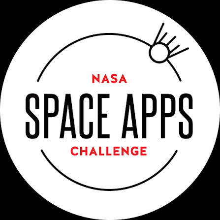

NASA Space Apps Challenge
American Space Dushanbe
DUSHANBE, TAJIKISTAN · 2026
Artifacts of Silence: NASA’s Discarded Equipment
Preserving the history of humanity’s robotic pioneers on the Moon and Mars.
The Unsung Monuments of Space Exploration
200,000+ kg Left Behind Across the Cosmos
Over five decades of exploration, dozens of landers, rovers, and orbital probes have been left behind on the Moon, Mars, and in deep space after completing their missions.
Forgotten Pioneers & Fragmented Data
Public attention focuses only on active missions (like Perseverance or Artemis), while historic trailblazers (Opportunity, InSight, Apollo Lunar Modules) sit abandoned in silence—and their data remains scattered across dry technical catalogs.
Introducing “Artifacts of Silence”
An immersive web application uniting official NASA open archival data (NSSDCA) with powerful first-person emotional storytelling from the perspective of the machines themselves.
Interactive World Filtering
Switch seamlessly between [The Moon], [Mars], and [Deep Space / Orbit] with a 1969–2026 Space Dust Time-Lapse Slider.
Voice of the Machine
First-person monologues and Web Speech audio synthesis that let rovers, landers, and telescopes tell their own stories.
Official NSSDCA Archives
Authentic mission designators, coordinates, left-behind scientific payloads, and historical NASA photo galleries.
Powered by NASA NSSDCA Data
1. Real NASA Space Science Data Coordinated Archive (NSSDCA) Datasets
Every object is indexed with official COSPAR/NSSDCA IDs, exact landing/orbital coordinates, dry mass, power systems (RTG, Ag-Zn, GaAs solar), and preserved scientific instruments.
2. Structured Dossiers for 8 Legendary Space Relics
Covers Apollo 11 Eagle (1969-059C), Apollo 15–17 LRVs, Sojourner (1996-068A), Spirit & Opportunity, Viking 1 & 2, InSight & Phoenix, Dawn at Ceres (2007-043A), and Kepler Space Telescope (2009-011A).
3. High-Performance Web Stack
Built with HTML5, Tailwind CSS, Alpine.js, and Three.js (WebGL) for zero-lag 60fps 3D background rendering and instant responsiveness across desktop and mobile.
Giving a Voice to the Silent Machines
Welcomes visitors with official NASA Space Apps and American Space Dushanbe branding, honoring our local hackathon community.
First-person memories that create human empathy—turning cold titanium and solar cells into unforgettable characters.
Futuristic dark glassmorphism, glowing telemetry accents, and interactive dust-accumulation sliders.
“I listened to the heartbeat of Mars — over 1,300 marsquakes recorded. As Martian dust choked my solar panels, I sent my final picture: ‘My power's really low, so this may be the last image I can send.’ But I unlocked the inner secrets of Mars.” — INSIGHT MARS LANDER (NSSDCA ID: 2018-042A · ELYSIUM PLANITIA)
Why This Matters & Next Steps
Inspiring Future Engineers in Tajikistan
By weaving together rigorous astrophysics data and human storytelling, Artifacts of Silence inspires students, developers, and young engineers across Tajikistan and globally to engage with space exploration and planetary heritage.
Next-Generation Capabilities
- Interactive 3D Spacecraft Models via Three.js / WebXR.
- Live Solar Wind & Dust Storm Map over landing coordinates.
- 50+ Historical Relics Expansion (Surveyor, Venera, Huygens on Titan, Ingenuity).
Thank You! Explore Our Project.
“Let’s ensure humanity's greatest footprints are never forgotten.”